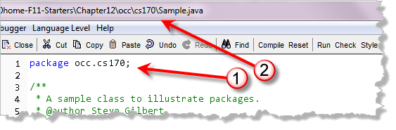
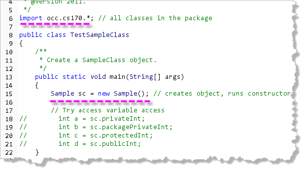

Now that you know how to write your own classes, there are still a few topics left to discuss. These topics deal, either directly or indirectly, with "class design" and "writing methods".
Along the way, we'll also revisit the topics of parameter passing and method design. Let's start by looking at variable and method scope along with the related topic of access specifiers and packages.
Scope and Identifiers
 Most of us are pretty attuned
to the sound of our names.
If you are at a party, and you hear someone call out "Sam!",
you'll probably look around and see if someone is trying to
get your attention. (Assuming your name is Sam, of course.)
Most of us are pretty attuned
to the sound of our names.
If you are at a party, and you hear someone call out "Sam!",
you'll probably look around and see if someone is trying to
get your attention. (Assuming your name is Sam, of course.)
On the other hand, if you hear the name "Sam" in a movie, or on TV, you're unlikely to do the same thing, because the context makes it clear that you're not the Sam under discussion.
Variable and method names work in a similar way; the same name can mean different things, depending upon the context. As I'm sure you remember, a variable is simply a named memory location that stores a value. You'll also remember that instance variables are different than local variables. One of the things differentiating instance variables and local variables is the scope of variable names.
Scope is word that simply means "visibility", or ...
...where is the name of a variable visible?
Your programs can have two kinds of scope: local scope and class scope. Let's start by looking at local scope.
Local Scope
Variables created inside a method,
or variables created inside a flow-of-control "block"
have local scope. (A block is a section of code enclosed
in braces. The most common block is the body of a method. However,
the body of an if statement or a loop is
also a block.)
Formal parameter variables also have local scope, although, technically, they are defined outside of the block that marks the extent of the method body. For scope purposes, they are treated as having been defined on the first line of the method body.
Here are several examples that illustrate the rules Java uses for local scope.
Same Scope
Two variables in the same scope may not have the same name:
public void methodOne(String s)
{
int x = 3; // OK, no other X
double x = 5; // ERROR, x already in this scope
long s = 3L; // ERROR, s already in this scope
}
Notice that we cannot create the double variable
named x because there is already an int
variable of that name defined in the same method.
The same is true with
the long variable named s. While there
is no local variable of that name, there is a formal
parameter named s and its scope extends from
the point where it is declared (in the parameter list), to
the end of the method.
No Nested Local Block Scope
In Java, you cannot "hide" one local variable by creating a
new local variable inside a nested block. (This is different
than C/C++, which does allow this.) Here's an example,
using the body of an if statement to create a
local nested block.
public void methodOne()
{
int x = 3; // OK, no other X
if ( . . . )
{
int x = 5; // ERROR, cannot nest local scopes in Java
}
}
However, if there is no variable in the outer block, you may create variables of the same name inside a block. The scope of those variables is the block they are created in. Here's an example of that:
public void methodOne()
{
if ( . . . )
{
int x = 5; // OK, local to the body of the if statement
}
if ( . . . )
{
double x = 2.0; // OK; this is a different scope
}
}
for Loop Headers
Variables declared inside a for loop header are
local to the body of the for loop. Variables
declared before the header, are local to the method
or block that contains the for loop.
Here's an example:
public void methodOne()
{
// SITUATION 1: IN THE HEADER
for (int i = 0; . . . )
{
// i is in-scope inside the loop body
}
// i is out-of-scope after the loop body
// SITUATION 2: BEFORE THE HEADER
int j; // j declared before the loop header
for (j = 0; . . . )
{
// j is in-scope inside the loop body
}
// j is still in-scope after the loop body
}
Different Scope
Variables in different local scopes may have the same name. Here's an example that is OK:
public class A
{
public void methodOne() { int x = 3; }
public void methodTwo() { int x = 5; }
}
The variable x defined inside methodOne()
is different than the variable x defined inside
methodTwo(). The body of methodOne()
is a different local scope than the body of
methodTwo().
Variables in different local scopes are invisible to each other, and may not be accessed from another local scope. Here's an example that illustrates this:
public class A
{
public void methodOne() { int x = 3; }
public void methodTwo() { x = 5; }
// ERROR, x from methodOne() is invisible in methodTwo()
}
Formal Parameters
Just to reiterate, formal parameter variables have local scope for the entire method. That is, you cannot have a local variable that has the same name as one of the method's formal arguments.
In the example shown here, methodOne() is illegal
because the formal parameter x, and the local variable
x have the same name.
public class A
{
public void methodOne(int x) { int x = 3; } // ERROR
public void methodTwo(int y) { int x = 5; } // OK
}
Class Scope
Class scope refers to the scope rules that apply to instance variables (fields). The scope of an instance variable is the class it is defined in. This means you cannot have two instance variables with the same name, in the same class, just like you cannot have two local variables with the same name in the same method.
Class scope is also affected by the access
modifiers public, private, and
protected which we'll talk about in a bit.
Different Classes
What happens when two instance variables, in two different classes, have the same name, like this?
public class A { private int x = 3; }
public class B { private double x = 3.3; }
This is fine. Both class A, and class B
are different class scopes, so
the names don't clash with each other at all. That means,
just like with local variables, methods in class A cannot
access the instance variable x in class B, and vice-versa.
Instance and Local Variables
Instance variables and local variables exist in different scopes, so a local variable may have the same name as an instance variable without triggering a syntax error. This is actually very common, and it is a source of subtle and hard-to-find bugs (as well as being incredibly annoying).
When that happens, the most local variable name takes precedence. Here's an example:
public class A
{
double x = 2.2;
public void methodOne()
{
int x; // OK; in local scope, hides field x
x = 7; // x refers to the local variable x
this.x = 5.5; // this.x refers to the field x
}
}
Remember, the most local
identifier takes precedence. That means that the local variable
x "wins out" over the field x. If the method needs
to access the field x, it can do so by prefixing the word
this as in the last line of methodOne().
If a field is hidden
by a local variable, you use the keyword this to
access the field. Hiding a field with a local variable is a common
source of errors.
Access Specifiers
Closely related to the idea of scope is the idea of access control. With local scope, there is no access outside of the existing scope. With class scope, however, it is possible to access a variable defined inside one class scope from methods that are in a different class.
The keywords that control this are the access level
modifiers public, private,
protected and the default package-private
access.
Top-Level Access Control
When writing a class definition, you can make your class
public, in which case that class is visible to all
classes everywhere. On the other hand, if you don't use the
public modifier, then the class is known as
a package-private class.
A package-private class can only be used inside its own package. (Packages are named groups of related classes—you will learn about them in a little later.) In terms of the classes we've written, it means that a package-private class can only be used with other classes defined in the same folder.
class A { private B b = new B(); }
public class B { private A a = new A(); }
In this example class A has package-private
or default scope, while class B is public.
If both classes are in the same package (or if both classes are in
the same folder and not defined in any package), then the code is
fine.
However, if both classes are in different packages, then
class A is acceptable, because class B
is public, so it may be used from inside
class A. However, class B will not
compile, since it attempts to create an object of
class A, which is not in its package.
In Java, you cannot have private or
protected top-level classes. A single file can
contain only a single public class, but may
contain any number of package-private classes.
Packages
You've been working with packages since the beginning of
the semester, since all of the classes in the Java class library
are stored in different packages, such as java.awt
and java.lang. If you wish to use the import
statement to use code from another class in your program, then
that code must be inside a package.
To place your class inside a package you do two things:
- Add a
packagestatement as the first line in your source code file. Here's an example:package occ.cs170;
// import statements go here
public class Sample { ... }
- Place the code in a folder of the same name as the package. In this case, it would need to be inside a folder named cs170, which must, itself be inside a folder named occ.
Here's the code for Sample.java (which you'll find
in this chapter's code folder):

Notice how the folder that the code is stored in matches the name of the package that the class is part of.Using Classes in a Package
If we want to use the Sample class in
our program, then the root of the package must be in
the class-path accessible when you run an compile
your code.
In practice, that means that we can create another program,
called TestSampleClass.java that simply creates
an object of the class, like this:

Notice, that this program is not in the same package and not defined in the same folder. Instead, we access the classes in the package by using theimport
statement. You'll find this program inside the Chapter12 code
folder, with the occ.cs170 package defined inside
the appropriate folders.
DrJava, since it was designed for introductory programming, does a really poor job of displaying package structure. Other IDE tools, like Eclipse, NetBeans or Idea make it much easier to put your code into a package.
Member-Level Access Control
At the member level, (fields and methods), you can also use
the public modifier or no modifier
(package-private) just as with top-level classes.
For methods and fields, though, there are two additional
access modifiers: private and protected.
privatespecifies that the item can only be accessed in its own class.protectedmeans that the item can be accessed from any class in its own package (just like the default package-private), as well as by any subclass of its class, even if that class is in another package.
The occ.cs170.Sample class defines four
appropriately-named int instance variables, and
the TestSampleClass program attempts to access each of
those variables from its main() method.
If you uncomment each of the lines, one by one, and then
recompile, you'll see that only one of these succeeds.
Because the variable named publicInt was defined
with public access inside the Sample
class, the line: int d = sc.publicInt; compiles
correctly, and succeeds in accessing a class variable in
a different scope.
Access-Level Tips
Access levels affect you in two ways. First, when you use classes that come from another source, such as the classes in the Java platform, access levels determine which members of those classes your own classes can use. Second, when you write a class, you need to decide what access level every member variable and every method in your class should have.
Using the correct access levels will help you write code that is more reliable and less likely to "rot" as it is modified and extended, especially if your classes are designed to be extended with inheritance.
Here are two good general-purpose rules.
- Use the most restrictive access level that makes sense for a
particular member. Use
privateunless you have a good reason not to. - Avoid
publicfields except for constants. Public fields tend to link you to a particular implementation and limit your flexibility in changing your code.

Variable and Method Scope Summary
- Scope refers to visibility; which variables and methods are visible, and from where? Access control refers to permission to read or modify a variable, even if it is visible.
- Local scope applies to variables defined inside methods or inside flow-of-control blocks. A local variable is visible from the point where it is first declared until the block it is declared inside ends. When the end of the block is reached, the memory used for the variable is automatically released.
- A local variable remains in scope inside any blocks
contained in the block where the variable is declared. (In other
words, a variable defined in a method is still visible inside
the body of an
ifstatement or loop inside that method. - A local variable is not visible while executing a method call inside a block. The memory for the variable still exists, but the variable can't be seen from inside the method you are executing.
- The names of local variables must be unique in a given local scope. Normally that means one variable per name inside each method. However, you may have several local variables of the same name in a method, if each is declared in a separate block scope, such as the body of a loop.
- Names of local variables do not nest in Java. You cannot create a local variable in a block if a variable of the same name already has been defined inside the method.
- The scope of formal parameters is the entire body of the method, as if they were defined at the top of the method body.
- The scope of a variable declared in the initializer statement
of a
forloop header is the body of the loop, as if it were defined on the first line of the loop body. - Instance variables and methods both have class scope. The names of any instance variable are visible inside any method in the class, whether appearing before or after the definition of the variable. Fields may only access other fields that have been defined previously.
- The names of any methods are accessible inside any other method (or to initialize any fields) whether defined before or after the method definition.
- Local variables may have the same name as in instance
variable. The local variable hides the instance variable,
but if you qualify the name with the keyword
this, you may still use the "hidden" instance variable. - Access specifiers control the use of classes in different packages and the use of variables defined in one scope in methods defined in another scope. Access specifiers only apply to class scope, never to local scope variables.
- Top-level classes may be
publicin which case they may be used from any other class. Ifpublicis not used in the class header, the class has default or package-private access. That means it can only be used by another class in the same package. - A
packagestatement, added to the top of your code, allows you to group together similar classes. If your class has apackagestatement, you mayimportand use the classes from another package. You're folder structure must match the package name. - Individual fields and methods may be marked as
private,protected,publicor you may use the default, package-private access if you don't add an access modifier to the field or method definition.